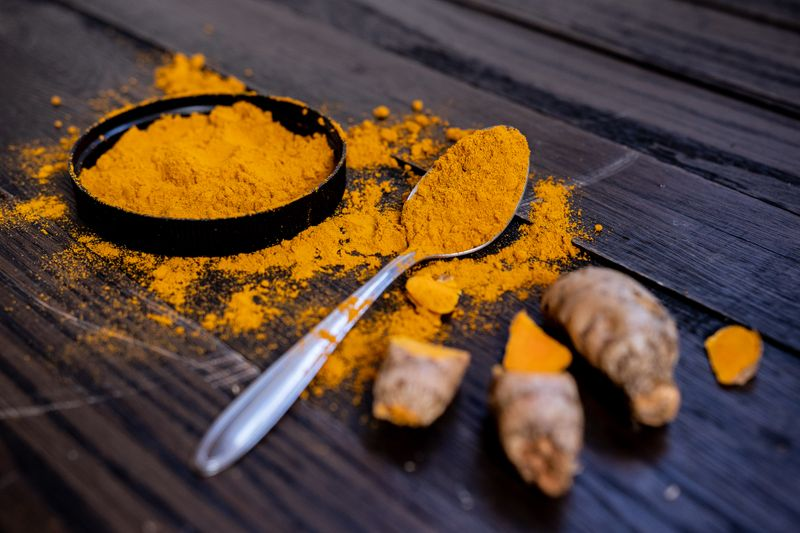

Tea Gingcuci



ORGA_ME Tea Gingcuci is a signature herbal infusion centered on ginger and traditional African herbs. Prepared to provide a smooth, comforting drink, Tea Gingcuci combines natural ginger with aromatic botanicals to create a supportive beverage for everyday wellness. Its warm, spicy flavor is designed to be both soothing and invigorating.
Benefits for the Body
Tea Gingcuci supports digestion, circulation, and immune health through its ginger and botanical blend. It warms the body, promotes circulation, eases tension, and supports natural energy without caffeine. The aromatic compounds help reduce stress and support mental clarity. It also provides gentle respiratory support and antioxidant protection.
How to Use
Steep one teaspoon of Tea Gingcuci in 8 oz of hot water for 5-8 minutes. Strain and enjoy warm or chilled. Use once daily.
Ingredients
Ginger root, traditional botanicals, natural flavorings — no preservatives, no artificial additives.